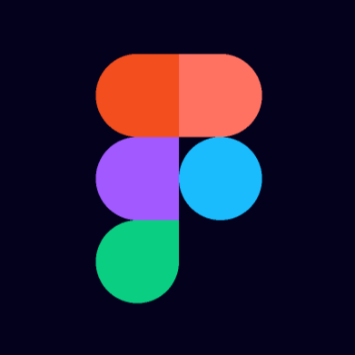
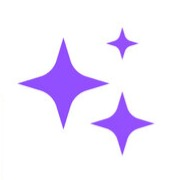
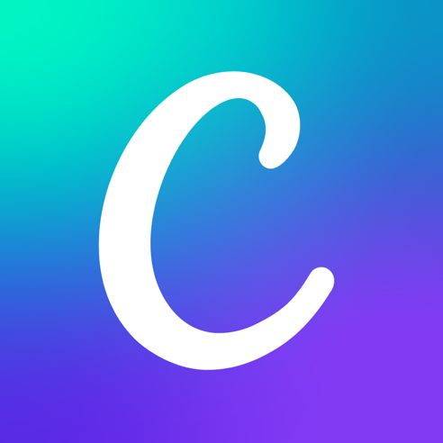
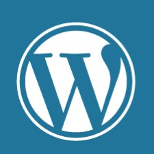
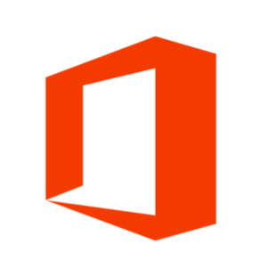
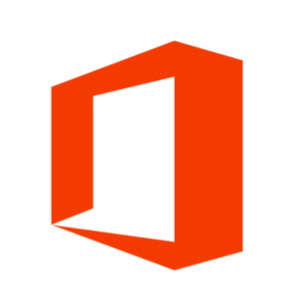

Curriculum Vitae
Skills
Figma
AI Generativa
Wireframing
Prototyping
Canva
Wordpress
SEO
SEO Editoriale
Content editing
User personas
User journey
 Storytelling
Microsoft Office
User research
User interface
ECDL
CAD e modellazione 3D
Storytelling
Microsoft Office
User research
User interface
ECDL
CAD e modellazione 3D
 HTML e CSS
HTML e CSS
Lingue
| Inglese |
B2 |
| Spagnolo |
B1 |
| Italiano |
Madrelingua |
Esperienze lavorative
- Da settembre 2022 a dicembre 2022 ho svolto un tirocinio
curricolare
presso i giornali online di Rumors.it, innovaMI.news e il coworking di
flexworking.it.
Attività svolte:
- redazione di articoli di giornale utilizzando Wordpress, per le due testate
giornalistiche e il blog di flexworking.it
- attività di SEO editoriale
- attività di social media manager per flexworking.it
- content editing
- Dal 28 agosto 2020 al 31 ottobre 2020 con mansioni di addetto
al magazzino e assistenza clienti presso libreria LIBRACCIO in Castelletto
Sopra Ticino (NO) con contratto di lavoro a chiamata a tempo determinato
Istruzione
- 2024 – in corso
Start2Impact:
Master in UX/UI design e AI
- 2020 – 2024
Università Statale Di Milano:
Laurea in Scienze Umanistiche per la Comunicazione (voto 99/110)
- 2017 – 2020
Politecnico di Milano:
Esami e corsi di Ingegneria Aerospaziale
- 2012 – 2017
Istituto d’Istruzione Superiore “Enrico Fermi”, Arona (NO):
Diploma di Liceo Scientifico Opzione Scienze Applicate (voto 83/100)